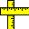 Meazure™ User Manual
Version @MAJOR_VERSION@.@MINOR_VERSION@
Copyright © 2023 C Thing Software
Overview
Meazure is a tool for easily measuring and capturing portions of the screen. Tasks such as measuring the size of a window, capturing an image, determining the color of a pixel, and determining the screen size can all be easily accomplished. Meazure provides a number of different tools for measuring and capturing the screen. In addition, tool positions can be recorded to a file for future playback.
The Meazure user interface is organized into the following sections.
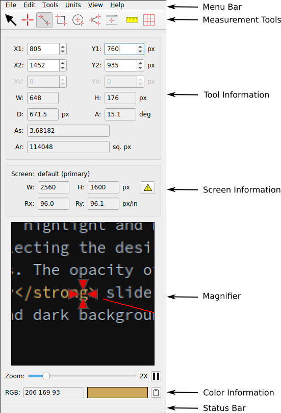
Launching
The Meazure program can be launched in a number of ways:
- Clicking the Meazure icon on the desktop
- Entering
meazureat a command prompt - Double-clicking a position log file on the desktop
- Double-clicking a configuration file on the desktop
Getting Help
In addition to this user manual, Meazure provides various kinds of interactive help.
- Tool Tips
- Many of the buttons and controls on the Meazure user interface provide tool tips. These short help messages are displayed when the mouse cursor hovers over a control (e.g. a button).
- Status Bar
- The status bar is located at the bottom of the Meazure window. Similar to a tool tip, the status bar shows short help messages. When the mouse cursor moves over a user interface item, a short description of that item is shown in the status bar. Unlike tool tips, status bar help is shown for more items (e.g. menu items) and the help is displayed immediately upon moving over the item.
- Help - F1
- Press F1 or select the Help item from the Help menu to open a browser showing this user manual.
- What's This? - Shift+F1
- Detailed context-sensitive help is available from the What's This? item on the Help menu, by pressing Shift+F1, or by pressing the ? button on any dialog. When this form of help is selected, move the cursor over the item for which help is needed. If the cursor changes to an arrow with a question mark, click on the item and a popup window will display the detailed help. Click anywhere to dismiss the popup window. If the cursor is shown as a circle with a line through it, detailed help is not available for the item.
- Releases
- Select the Releases item on the Help menu to open a browser showing the current releases of Meazure. Select About on the Help menu to obtain the version of Meazure being used.
- Report an Issue
- Select the Report an Issue item on the Help menu to report a bug, make a feature request, or ask a question.
- About
- Version and contact information is available from the About item on the Help menu. In addition, a financial contribution to support the continuing development of measure can be made from the About dialog.
- Command line
-
Help about the Meazure command line can be obtained by running the following from a command prompt:
meazure -h
Measurement Tools
Tools Overview
Meazure provides a number of tools for measuring and capturing the screen. Each tool has its own unique characteristics and is designed for different measurement tasks. Because each tool is independent of the other tools, positioning one tool will not affect the positions of the other tools. This section provides an overview of the tools and links to detailed information about each tool.
Only one of the following measurement tools can be selected at a time.
- Cursor Tool
- Tracks the position of the mouse cursor.
- 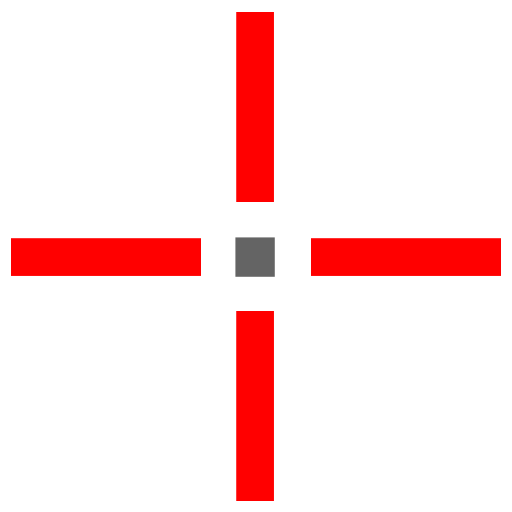 Point Tool
- Provides a crosshair that can be positioned.
- 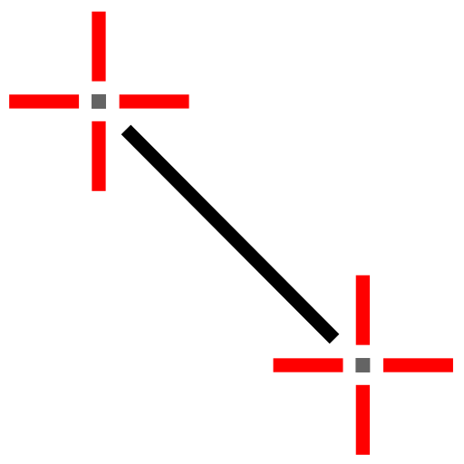 Line Tool
- Provides two crosshairs connected by a straight line. Use this tool to measure the distance between two points.
- 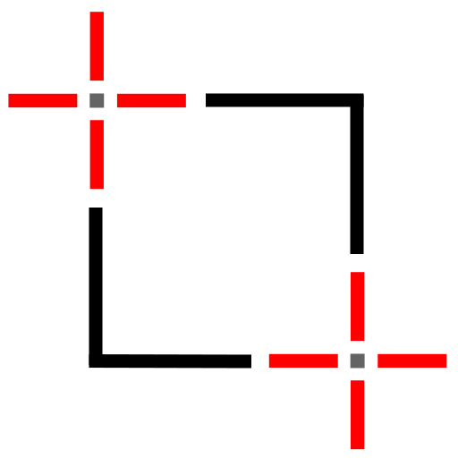 Rectangle Tool
- Provides two crosshairs connected by a rectangle. Use this tool to measure and capture arbitrary portions of the screen.
-
 Circle Tool
Circle Tool
- Provides two crosshairs, one at the center of a circle and the other on the circumference of the circle. Use this tool to measure radial distances on online maps. Arbitrary portions of the screen can be captured using this tool.
- 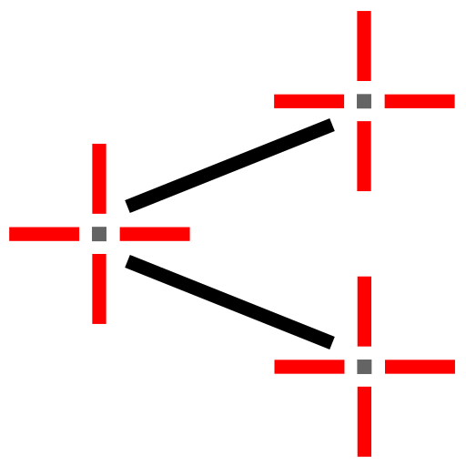 Angle Tool
- Provides three crosshairs connected by two lines to form a protractor for measuring arbitrary angles on the screen.
-
 Window Tool
Window Tool
- Measures the window under the mouse cursor. Use this tool to measure and capture windows.
The following tools can be used in conjunction with the above tools.
-
 Rulers
Rulers
- Provides a pair of orthogonal rulers (a.k.a. a ruler square).
-
 Screen Grid
Screen Grid
- Overlays a rectangular grid on the screen.
Tool Information
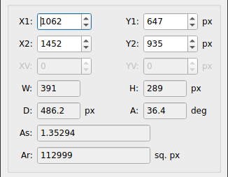 All tool measurements are displayed in the tool information section of the user interface. The information is displayed in text fields some of which have adjacent up and down buttons to change the displayed value. Depending on the currently selected measurement tool, the text fields are shown in one of three states. The value in fields with white backgrounds can be changed by editing the value, pressing the up or down buttons, or pressing the up or down arrow keys while the field has the keyboard focus. The value in fields with gray backgrounds and black text are read-only. Fields where the text and labels are gray and barely readable, are disabled.
Each text field has a label identifying the type of measurement (e.g. X1) and, if applicable, the units for the measurement (e.g. px). The available measurements depend on the currently selected measurement tool. The following are general descriptions of the measurements. See the individual tool sections for detailed descriptions of the measurements provided by that tool.
- X1, Y1 - Coordinate
- The x and y coordinates of point 1.
- X2, Y2 - Coordinate
- The x and y coordinates of point 2.
- XV, YV - Coordinate
- The x and y coordinates of the vertex or center point.
- W, H - Width, Height
- The width and height of a bounding rectangle around the measurement tool.
- D - Distance
- The distance along a line, diagonal, or radius.
- A - Angle
- The angle of a line, diagonal, radius, or protractor measurement.
- As - Aspect Ratio
- The aspect ratio of a bounding rectangle around the measurement tool.
- Ar - Area
- The area of a circle or bounding rectangle around the measurement tool.
Crosshairs
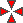 The Point, Line, Rectangle, Circle, and Angle tools use crosshairs for interactive positioning of the tool to perform measurements. A crosshair consists of four triangular sections pointing to an open center. All measurements are based at the center of the crosshair.
Crosshair Visual States
A crosshair can be in one of three visual states: default, hover and flashing.
- Default
- If the mouse is not positioned over the crosshair, it is in the default state. The crosshair background is red, by default.
- Hover
- If the mouse is positioned over the crosshair, it is in the hover state. The crosshair background is yellow, by default. In addition to a color change, a companion data window pops up indicating the current position of the crosshair. A tooltip may also appear indicating which measurement point the crosshair represents (e.g. Point 1).
- 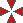 Flashing
- When a new tool is selected, it will flash its crosshairs between the normal and hover states for a few seconds to help you locate it. The crosshairs can be flashed at any time by selecting the Find Crosshairs item on the Edit menu or by using the shortcut Ctrl+F.
The crosshairs can be hidden by selecting the Hide Crosshairs item on the View menu or by pressing Ctrl+B. Selecting the item or pressing the key sequence again will make the crosshairs visible. Note that it is not possible to interactively position tools when the crosshairs are hidden. See Moving a Crosshair for other ways to position crosshairs.
The colors and opacity of the crosshairs can be changed using the Tool Preferences panel.
Moving a Crosshair
Measurements are taken by moving a crosshair to the desired position on the screen. There are many ways to position a crosshair including dragging using the mouse and single pixel movement using the keyboard.
- Mouse dragging
-
The fastest way to position a crosshair is by dragging it using the mouse. Position the mouse over the
crosshair so that it is in the hover state. Press the left mouse button and drag the crosshair to the
desired position. The position of the crosshair will be continuously displayed and the
magnifier will display the area around the crosshair as it is being dragged.
Certain Window Managers (e.g. Gnome) have areas into which the crosshair can be dragged but cannot be dragged out. Typically, these are areas on the side, bottom or top edges of the screen where the Window Manager provides its icon bars and decoration. If a crosshair is dragged into one of these dead zones, use the text fields to move the crosshair out.
- Text field editing
- The crosshair can be positioned by entering a value in the text fields of tool information section. Click on a text field and enter a positive or negative numeric value. The crosshair will move as the value is edited.
- Text field keys
- Click on a text field and use the keyboard up and down arrow keys to move the crosshair by one pixel. The value displayed in the text field corresponds to a change of one pixel converted to the currently selected units.
- Text field buttons
- Press the up or down arrow button adjacent to the text field to move the crosshair by one pixel. The value displayed in the text field corresponds to the change in pixels converted to the currently selected units. Pressing and holding an arrow button will repeat the change. Pressing the Ctrl key while pressing an arrow button will move the crosshair by ten pixels.
- Keyboard arrows
- If the focus is not in a text field, the keyboard arrow keys can be used to move the crosshairs by a single pixel. Pressing Ctrl+1, Ctrl+2 and/or Ctrl+3 along with an arrow key will move the corresponding crosshair a single pixel in the direction of the arrow. Multiple crosshairs can be moved at the same time by pressing multiple numbers. For example, pressing Ctrl+1+2 and the up arrow moves the Point 1 and Point 2 crosshairs up one pixel.
- Move to cursor
- A crosshair can be moved to the current location of the mouse cursor using Ctrl+Shift+1, Ctrl+Shift+2 or Ctrl+Shift+3. The number specifies the crosshair to move. For example, with the Line tool selected, pressing Ctrl+Shift+2 moves the line's Point 2 crosshair to the current mouse location. With the Angle tool selected, pressing Ctrl+Shift+3 moves the vertex of the angle to the current mouse location.
Reading a Crosshair Position
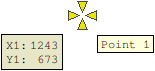 The current position of a crosshair can be read in two places. The first is in the tool information section. The second place is the data window associated with the crosshair. The Line and Rectangle tools have two crosshairs called Point 1 and Point 2 respectively. The Circle tool has two crosshairs called Vertex, which is at the center of the circle, and Point 1 on the circumference of the circle. The Angle tool has three crosshairs called Point 1, Point 2, and Vertex. Whether a crosshair is Point 1, 2 or Vertex can be determined either by looking at the data window or the tooltip associated with the crosshair.
Data Window
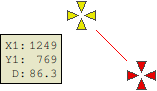 A data window is a popup window containing tool-dependent measurement information. When the Cursor tool is selected, a data window is displayed next to the mouse cursor. A data window is also displayed while hovering over or dragging a crosshair.
The data window can be hidden by selecting the Hide Popup Data Window item on the View menu. Selecting the item again will make the data window visible.
The opacity of the data window can be changed using the Tool Preferences panel.
Cursor Tool
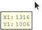 The Cursor tool tracks the position of the mouse cursor. Both the data window attached to the cursor and the tool information section display the position of the cursor hotspot. Note that the position of the cursor cannot be changed using the position text fields. The magnifier shows the area around the cursor as well as the color of the pixel currently under the cursor hotspot. The Cursor tool does not affect normal operation of the mouse cursor.
The tool information section displays the following measurements for the Cursor tool:
- X1, Y1
- The position of the cursor.
To select the Cursor tool, choose the Cursor item on the Tools menu or click on the Cursor tool icon on the toolbar.
Point Tool
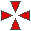 The Point tool provides a single crosshair to measure a position. Both the data window attached to the crosshair and the tool information section display the position of the crosshair. The magnifier shows the area around the crosshair as well as the color of the pixel at the center of the crosshair.
The tool information section displays the following measurements for the Point tool:
- X1, Y1
- The position of the Point 1 crosshair.
To select the Point tool, choose the Point item on the Tools menu or click on the Point tool icon on the toolbar.
Line Tool
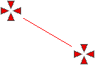 The Line tool provides two crosshairs to measure the distance and other information along the line connecting them. In addition, the screen area encompassed by the bounding rectangle around the line can be captured to the clipboard. Both the data window attached to the crosshairs and the tool information section display the measurement information. The magnifier shows the area around the crosshair that is being moved as well as the color of the pixel at the center of that crosshair.
The tool information section displays the following measurements for the Line tool:
- X1, Y1
- The position of the Point 1 crosshair.
- X2, Y2
- The position of the Point 2 crosshair.
- W, H
- The width and height of the bounding rectangle for the line, defined as and respectively
- D
- The length of the line connecting the two crosshairs, defined as
- A
- 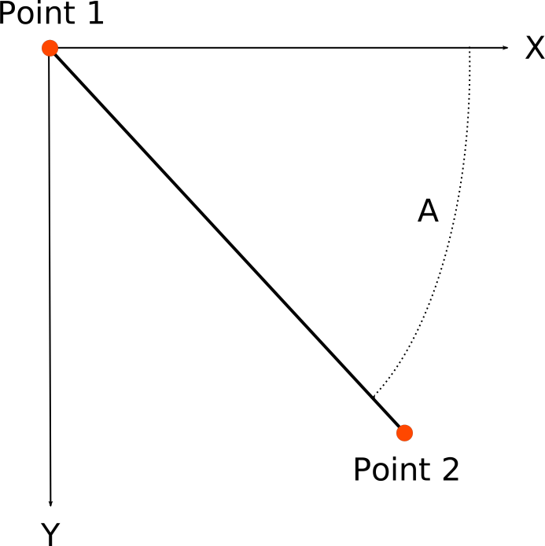 The angle of the line relative to the x-axis. Using the default coordinate system, positive angles are measured clockwise from the positive x-axis to the line from Point 1 to Point 2.
- As
- The aspect ratio of the bounding rectangle for the line, defined as
- Ar
- The area of the bounding rectangle for the line, defined as
Note that the calculation of W, H, D and Ar is always performed in pixel units and the result is converted to the currently selected display units.
As described in the Moving a Crosshair section, the mouse or keyboard can be used to position the crosshairs. In addition, the entire line can be moved by pressing the Ctrl key while dragging one of the crosshairs.
To select the Line tool, choose the Line item on the Tools menu or click on the Line tool icon on the toolbar.
Rectangle Tool
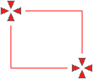 The Rectangle tool provides two crosshairs to measure the enclosing rectangle. In addition, the screen area bounded the rectangle can be captured to the clipboard. Both the data window attached to the crosshairs and the tool information section display the rectangle measurement information. The magnifier shows the area around the crosshair that is being moved as well as the color of the pixel at the center of that crosshair.
The tool information section displays the following measurements for the Rectangle tool:
- X1, Y1
- The position of the Point 1 crosshair
- X2, Y2
- The position of the Point 2 crosshair.
- W, H
- The width and height of the rectangle, defined as and respectively
- D
- The length of the diagonal, defined as
- A
- The angle of the diagonal relative to the x-axis. Using the default coordinate system, positive angles are measured clockwise from the positive x-axis to the line from Point 1 to Point 2
- As
- The aspect ratio of the rectangle, defined as
- Ar
- The area of the rectangle, defined as
Note that the calculation of W, H, D and Ar is always performed in pixel units and the result is converted to the currently selected display units.
To capture the screen area bounded by the rectangle see Screen Capture.
As described in the Moving a Crosshair section, the mouse or keyboard can be used to position the crosshairs. In addition, the entire rectangle can be moved by pressing the Ctrl key while dragging one of the crosshairs.
To select the Rectangle tool, choose the Rectangle item on the Tools menu or click on the Rectangle tool icon on the toolbar.
Circle Tool
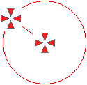 The Circle tool provides two crosshairs, one establishing the center of the circle and the other a point on the circumference of the circle. The screen area contained in the square bounding the circle can be captured to the clipboard. Both the data window attached to the crosshairs and the tool information section display the measurement information. The magnifier shows the area around the crosshair that is being moved as well as the color of the pixel at the center of that crosshair.
The tool information section displays the following measurements for the Circle tool:
- X1, Y1
- The position of the Point 1 crosshair on the circumference of the circle
- XV, YV
- The position of the crosshair at the center of the circle
- W, H
- The width and height of the bounding square, defined as
- D
- The radius of the circle
- A
- The angle of the radius relative to the x-axis. Using the default coordinate system, positive angles are measured clockwise from the positive x-axis to the line from center of the circle to Point 1 on the circumference.
- Ar
- The area of the circle, defined as
Note that the calculation of W, H, D and Ar is always performed in pixel units and the result is converted to the currently selected display units.
To capture the screen area bounded by the circle see Screen Capture.
As described in the Moving a Crosshair section, the mouse or keyboard can be used to position the crosshairs. In addition, the entire circle can be moved by pressing the Ctrl key while dragging one of the crosshairs.
To select the Circle tool, choose the Circle item on the Tools menu or click on the Circle tool icon on the toolbar.
Angle Tool
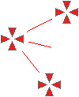 The Angle tool provides a protractor for measuring arbitrary angles on the screen. The tool provides three crosshairs that can be positioned anywhere on the screen. One crosshair is located at the vertex of the angle and the other two crosshairs define the angle. The measured angle is on the same side as the angle bisector line. Both the data window attached to the crosshairs and the tool information section display the angle measurement information. The magnifier shows the area around the crosshair that is being moved as well as the color of the pixel at the center of that crosshair.
The tool information section displays the following measurements for the Angle tool:
- X1, Y1
- The position of the Point 1 crosshair
- X2, Y2
- The position of the Point 2 crosshair
- XV, YV
- The position of the angle vertex crosshair
- A
- 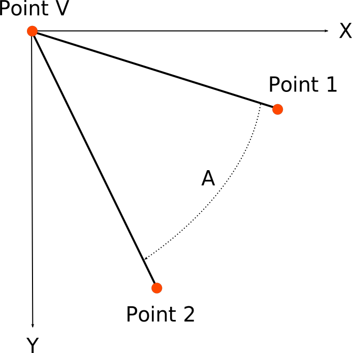 The angle formed by the lines from the vertex to Point 1 and Point 2. The angle is measured on the side of the tool that contains the angle bisector line. Using the default coordinate system, positive angles are measured clockwise from the Point 1 line to the Point 2 line
As described in the Moving a Crosshair section, the mouse or keyboard can be used to position the crosshairs. In addition, the entire angle can be moved by pressing the Ctrl key while dragging one of the crosshairs.
To select the Angle tool, choose the Angle item on the Tools menu or click on the Angle tool icon on the toolbar.
Window Tool
The Window tool measures the size of any top level window on the screen. In addition, the window contents can be captured to the clipboard. As the mouse cursor is moved over the screen, a red rectangular border is placed over the window being measured. Both the data window attached to the window border and the tool information section display the window measurement information. Note that the position of a window cannot be changed using the position text fields.
Meazure attempts to detect the rectangle bounding the content of a window. Depending on the Window Manager and how a window is configured, the bounding rectangle may be larger than the content of the window. In those cases, use the Rectangle tool measure the window.
The tool information section displays the following measurements for the Window tool:
- X1, Y1
- The position of the upper left corner of the window
- X2, Y2
- The position of the lower right corner of the window
- W, H
- The width and height of the window, defined as and respectively
- D
- The length of the window diagonal, defined as
- A
- The angle of the diagonal relative to the x-axis. Using the default coordinate system, positive angles are measured clockwise from the positive x-axis
- As
- The aspect ratio of the window, defined as
- Ar
- The area of the window, defined as
Note that the calculation of W, H, D and Ar is always performed in pixel units and the result is converted to the currently selected display units.
To capture the window contents see Screen Capture.
To select the Window tool, choose the Window item on the Tools menu or click on the Window tool icon on the toolbar.
Rulers
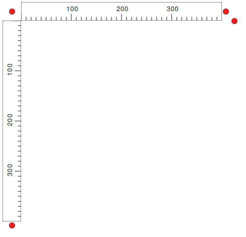 To assist in measuring items on the screen, a set of horizontal and vertical rulers can be displayed. Rulers can be used in conjunction with any other measurement tool. The rulers provide indicators that show the positions of the current measurement tool. For example, when the Cursor tool is selected, the ruler indicators will show the current position of the mouse cursor when it moves within the area contained by the rulers.
The position, length and angular orientation of the rulers can be changed using the circular grab handles located around the rulers.
Position: The rulers can be dragged to a new position on the screen using the circular grab handle at the origin between the two rulers.
Length: The length of each ruler can be changed by dragging the circular grab handle at the end of each ruler.
Rotation: The rulers can be rotated by dragging the circular grab handle at the end corner of the horizontal ruler.
The colors and opacity of the rulers can be changed using the Ruler preferences.
To select the rulers, choose the Rulers item on the Tools menu or click on the rulers icon on the toolbar.
Screen Grid
A rectangular grid can be overlaid on the screen to assist in measuring. The grid will not affect mouse cursor interaction with other windows. By default, the grid covers all screens and the cells of the grid are square. The cell spacing, grid size, origin and angular orientation can be adjusted by selecting the Screen Grid Settings item from the Tools menu.
To select the screen grid, choose the Screen Grid item on the Tools menu or click on the screen grid icon on the toolbar.
Screen Grid Settings
The screen grid visual parameters can be adjusted by selecting the Screen Grid Settings item from the Tools menu. Note that the screen grid is displayed when the screen grid setting dialogs is opened.
- Cell spacing
- The size of a grid cell can be adjusted using the Cell Spacing section of the grid settings dialog. The width and height of the cells can be adjusted using the corresponding text fields. The units for the cell size can be specified using the units drop down menu. If the horizontal and vertical dimensions are linked, the cell height will be kept the same as the cell width.
- Grid Orientation
- The origin of the screen grid can be changed using the X and Y fields. The overall width and height of the grid can be changes using the W and H fields. The grid can be rotated using the A field to specify the rotation angle in degrees relative to the x-axis. Note that regardless of the cell spacing units, the grid orientation values are always in pixels.
Units
Working With Units
Meazure offers a broad selection of units in which to display measurements. In addition, custom units can be defined. When selecting measurement units, it is important to understand the difference between resolution independent and resolution dependent units. For the purposes of this manual, screen resolution is defined as the number of pixels per physical distance on the screen (e.g. pixels per inch). This is also referred to as pixel pitch or pixel density. A pixel is assumed to be square in shape.
Resolution dependent units depend the physical density of pixels on the screen. The only resolution dependent units offered by Meazure are pixels. Because they are resolution dependent, pixel units require no calibration.
Resolution independent units do not depend on the physical density of pixels on the screen. All units offered by Meazure other than pixels, are resolution independent and require calibration to ensure accuracy.
The following units are provided for length measurements.
- Pixels
- The screen coordinates reported by the operating system are in pixels. These are resolution dependent units therefore require no calibration.
- Twips
- A twip is a resolution independent unit defined as 1/1440 of an inch. These units are used by Microsoft, OpenOffice and LibreOffice.
- Points
- A point is a resolution independent unit defined as 1/72 of an inch. These units are typically used to specify font sizes.
- Picas
- A pica is a resolution independent unit defined as 1/6 of an inch. These units are typically used in text layout programs.
- Inches
- The British imperial and US customary system unit of length measurement. This is a resolution independent unit.
- Centimeters
- A centimeter is a resolution independent unit in the Metric system. One 2.54 centimeters equal 1 inch.
- Millimeters
- A millimeter is a resolution independent unit in the Metric system. One 25.4 millimeters equal 1 inch.
- Custom
- If the above units do not meet your measurement needs, custom units can be defined. See the calibration section for instructions on defining custom units.
The following units are provided for angle measurements.
- Degrees
- One complete rotation around a circle is equal to 360 degrees.
- Radians
- One complete rotation around a circle is equal to radians.
Length and angle units are selected using the Units menu. The first time a resolution independent unit is selected, you will be prompted to perform a resolution calibration, if one has not already been done.
Note that regardless of the currently selected measurement units, internally all measurements are performed using pixels and then converted to the current units.
Calibration
As described in the Working with Units section, all units except pixels are resolution independent. This means that the screen resolution (pixels per physical distance) must be used to calculate measurements. By default, the screen resolution reported by the computer's operating system is used. Typically, this resolution is an approximation of the actual screen resolution, which results in resolution independent measurements being inaccurate. To address this inaccuracy, Meazure provides the capability to manually set the screen resolution.
Calibration should be performed the first time Meazure is used or whenever the display monitors are replaced. Meazure displays a warning the first time resolution independent units (e.g. inches) are selected if calibration has not been performed. In addition, a warning button is displayed in the Screen Information section if the operating system screen resolution is being used. There are a number of ways to open the calibration preferences page to perform calibration.
- Preferences
- Select Preferences from the Edit menu. Once the preferences dialog is open, click on the Calibration tab.
- Calibration warning dialog
- A warning dialog is displayed the first time resolution independent units are selected if calibration is required on any screen. Press the Calibrate button to open the calibration preference page.
- Calibration warning button
- 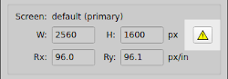 If the resolution reported by the operating system is being used on any screen, a button with a warning icon is displayed in the upper right corner of the Screen Information section. Press that button to open the calibration preference page. The button is no longer displayed when a manually calibrated resolution is being used on all screens.
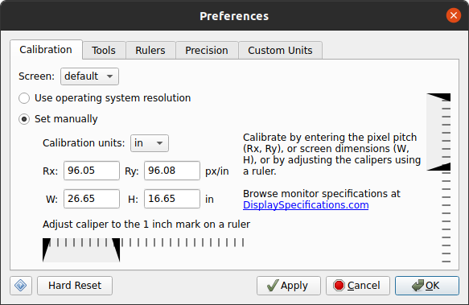
Once the calibration preference page is open, use the Screen drop down menu to select the display screen to calibrate. Select Set manually and perform calibration in one of two ways.
- Direct Entry
- Using this method of calibration, the resolution of the selected screen can be directly entered either as the pixel pitch (pixels per specified calibration units, e.g. px/in) or the overall screen dimensions in the specified calibration units. Only the pixel pitch or the screen dimensions needs to be specified because one can be calculated from the other. An excellent source of screen hardware specifications can be found at DisplaySpecifications.com.
- Ruler
-
Obtain a physical ruler. If the ruler is marked in inches, select in on
the Calibration units drop down menu. If the ruler is in centimeters, select
cm from the drop-down.
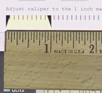 Hold the ruler against the screen such that it is directly below the horizontal calipers. Using the mouse, drag the right caliper such that the distance from the left caliper is one inch or two centimeters according to the ruler. Use one inch if inches are selected for calibration units. Use two centimeters if centimeters are selected for the calibration units. The value displayed between the calipers while dragging is the pixel pitch (e.g. pixels / inch). Repeat this process for the vertical caliper.
Move the preferences dialog to any other screens and repeat this process.
Calibration using a ruler should only be performed on the display screen showing the calibration preference page.
Do not use the Ruler tool to calibrate the resolution. The Ruler tool relies on the calibration to display its markings. Similarly, do not use any other computer generated ruler to perform the calibration. Always use a physical ruler.
Once the screens have been calibrated, press OK to apply all preference settings and dismiss the dialog, or press Apply to apply the settings but leave the dialog open.
Custom Units
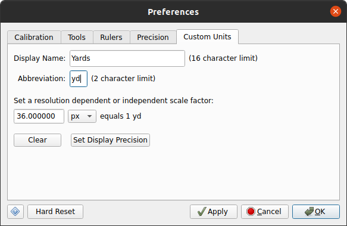
Meazure provides many units in which to perform measurements. However, measurement units other than those provided can be defined (e.g. yards). To define custom units, either select the Define Custom item on the Units menu, or select the Preferences item on the Edit menu and click on the Custom Units tab.
Only one set of custom units may be defined. To define custom units, perform the following steps:
- Enter a name for the units in the Displayable Name text field. This name is used on the Units menu. For example, to define yards as a custom unit, enter Yards for the name of the units.
- Enter an abbreviation for the units in the Abbreviation field. The abbreviation for yards could be yd.
- Custom units can be defined as resolution dependent (i.e. based on pixels) or resolution independent (i.e. based on inches or centimeters). Use the units drop down menu to select the basis for the custom units. The basis units for yards would be inches.
- Enter a scale factor for converting from the custom units to the basis units. The scale factor for yards would be 36 because there are 36 inches to a yard.
- Press the Set Display Precision button to set the number of decimal places for various types of measurements using the custom units. See Precision Preferences for details on specifying display precisions.
- Press OK to apply all preference settings and dismiss the dialog, or press Apply to apply the settings but leave the dialog open.
Once custom units have been defined, they can be select on the Units menu.
To remove custom units, open the custom units preference page and press the Clear button followed by the OK or Apply button. The custom units item on the Units menu will be disabled.
Screen Coordinate System
Default Coordinate System
The operating system reports screen coordinates to Meazure using its native coordinate system. The origin of this coordinate system (i.e. x=0, y=0) is located in the top left corner of the screen. The positive x-axis points to the right and the positive y-axis points down from the origin. This is the default coordinate system used by Meazure for all coordinate measurements.
A marker is placed at the origin of the coordinate system to visually identify its location and indicate the direction of the positive x and y axes. The origin marker can be hidden by selecting the Hide Origin Marker item on the View menu.
Inverting the Y-Axis
The coordinate system can be changed to the traditional Cartesian orientation where the origin is in the bottom left corner of the screen, the positive y-axis points up, and the x-axis points to the right from the origin. To change to this coordinate system, select the Invert Y item from the View menu. Meazure will present all coordinate measurements using this coordinate system.
Moving the Origin
The origin of the coordinate system can be moved to anywhere on the screen. To set a new origin position, move Point 1 of any tool to the desired position and either select Set Origin from the View menu or use the shortcut Ctrl+N. If the Cursor tool is being used, the origin is set to the current mouse cursor hotspot position. The origin marker is shown at the new location. To restore the origin to its default position, select Reset Origin from the View menu.
Supplemental Angle
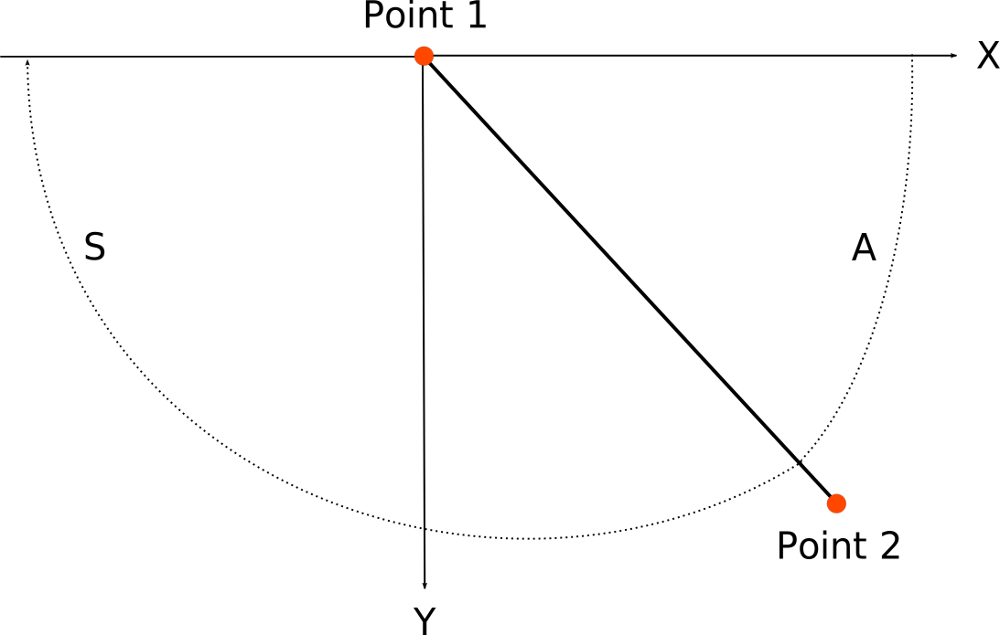 By default, angles are measured clockwise from the positive x-axis. Selecting the Supplemental Angle item from the View menu changes the angle measurements to , where .
Screen Information
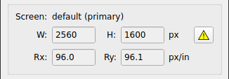 The size and resolution of the screen is displayed in the Screen Information section. In a multiple screen environment, the information displayed is for the screen containing the active measurement position (e.g. last moved crosshair). The name of the screen as reported by the operating system is displayed at the top of the section. The size and resolution are shown in the currently selected units.
- W, H
- Width and height of the screen
- Rx, Ry
- Horizontal and vertical resolution of the screen
If the resolution of any screen has not been calibrated, a warning button is displayed in the top right corner of the section. Press the button to perform screen calibration. Calibration is highly encouraged so that measurements using resolution independent units (e.g. inches) are accurate.
Magnifier
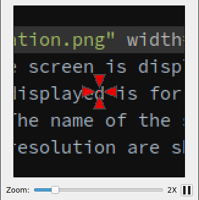 The magnifier provides a view of the area around an active measurement (e.g. positioning a crosshair, mouse cursor movement). The magnifier consists of the magnification window, a zoom level control and a pause button.
The magnification window is always centered on the point being measured. A red square at the center of the window indicates the measurement point. The amount of magnification is controlled either by the zoom slider or the Zoom In (Ctrl++) and Zoom Out (Ctrl+-) items on the View menu. Starting at 6X zoom, a grid is displayed in the magnification window to help identify individual pixels. The visibility and color of the grid can be controlled using the Magnifier Grid submenu on the View menu.
By default, the magnifier tracks the current point being measured. This tracking can be paused by pressing the pause button, selecting the Freeze Magnifier item on the View menu or using the shortcut Ctrl+M.
Color Information
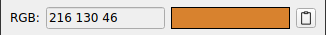 Information about the color of the pixel at the center of the magnifier is shown below the magnifier. The read-only field on the left shows the color value and the rectangle on the right is filled with that color.
The color information operates in one of two modes: direct display or color matching. Direct display shows the color information exactly as read from the pixel on the screen. Color matching finds the web safe color visually closest to the actual color of the pixel and displays information about the matched color. The color shown in the rectangle is the best match not the actual color. All color values are read from the screen in the RGB color space. Display of the color in formats other than RGB is done using conversion formulas.
The following direct display formats are available from the Color Format submenu on the View menu:
- RGB
- The color is displayed in the RGB color model as separate red, green, and blue values each between 0 and 255 inclusive. For example, a display of 128 14 255 corresponds to a red value of 128, a green value of 14 and a blue value of 255.
- #RRGGBB
- The color is displayed in the RGB color model as a single six digit hexadecimal number where the first two digits are the red component, the next two digits are the green component and the last two digits are the blue component. The value of each component is between 0 and 0xFF inclusive. For example, a display of #00ACFF corresponds to a red value of 0x00, a green value of 0xAC and a blue value of 0xFF.
- CMY
- The color is displayed in the CMY color model as separate cyan, magenta, and yellow components each as a value between 0 and 255 inclusive. For example, a display of 128 14 255 corresponds to a cyan value of 128, a magenta value of 14 and a yellow value of 255.
- CMYK
- The color is displayed in the CMYK color model as separate cyan, magenta, yellow, and black components. The value of each component is between 0 and 255 inclusive.
- HSL
- The color is displayed in the HSL color model as hue, saturation, and lightness values. The hue value is in degrees between 0 inclusive and 360 exclusive. The saturation and lightness values are percentages between 0 and 100 inclusive.
- YCbCr
- The color is displayed in the YCbCr color space as a luminance (Y) and two chrominance values (Cb and Cr). The luminance value is between 0 and 235 inclusive. The two chrominance values are between 0 and 240 inclusive.
- YIQ
- The color is displayed in the YIQ color space as a luminance (Y) and two chrominance values (In-phase, Quadrature). This format corresponds to that used in NTSC television broadcasting. The luminance value is between 0 and 255 inclusive. The in-phase value is between -152 and 152 inclusive. The quadrature value is between -133 and 133 inclusive.
The following color matching formats are available from the Color Format submenu on the View menu. All color matching is performed using the CIEDE2000 color difference algorithm.
- Extended Name
- Displays the best match of the current color to the extended web colors. The name of the best matched extended web color is displayed and the color swatch shows that color.
- Extended #RRGGBB
- Displays the best match of the current color to the extended web colors. The hexadecimal number representing the best matched extended web color is displayed and the color swatch shows that color.
- Basic Name
- Displays the best match of the current color to the basic web colors. The name of the best matched basic web color is displayed and the color swatch shows that color.
- Basic #RRGGBB
- Displays the best match of the current color to the basic web colors. The hexadecimal number representing the best matched basic web color is displayed and the color swatch shows that color.
The color values can be copied to the clipboard by pressing the button with the clipboard icon immediately to the right of the color swatch, by selecting Copy Color item on the Edit menu, or using the shortcut Ctrl+L.
Screen capture
The Line, Rectangle, Circle and Window tools provide the ability to capture a rectangular region of the screen. Once the tool is adjusted to cover the desired screen area, select the Copy Region item on the Edit menu or use the shortcut Ctrl+R to copy that region to the clipboard.
Preferences
Preferences provide the ability to customize the appearance and behavior of the program. To open the Preferences dialog, select the Preferences item from the Edit menu. The dialog consists of a set of tabbed pages, one for each preference category. The following sections describe each preference category.
Calibration Preferences
For details on the calibration preferences and how to perform units calibration, see the Calibration section.
Tool Preferences
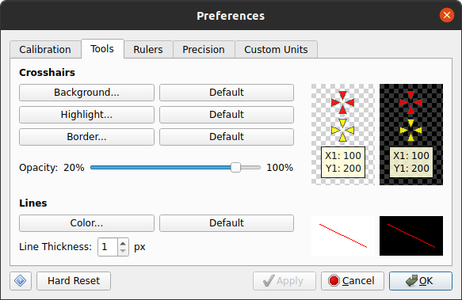
The background, highlight and border colors of the crosshairs can be set by pressing the respective buttons and selecting the desired color. The default colors can be restored by pressing the respective default buttons. The opacity of the crosshairs and data window can be changed using the Opacity slider. A value of 100% is fully opaque. Color and opacity changes are previewed on the light and dark backgrounds on the right side of the page.
The color of lines can be set by pressing the Color button and selecting the desired color. The default color can be restored by pressing the Default button. The thickness of the line in pixels can be set by typing it into the field or using the adjacent arrow buttons. Color and thickness changes are previewed on the light and dark backgrounds on the right side of the page.
Ruler Preferences
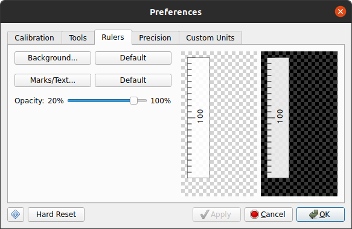
The background, tic mark and text colors of the rulers can be set by pressing the respective buttons and selecting the desired color. The default colors can be restored by pressing the respective default buttons. The opacity of the rulers can be changed using the Opacity slider. A value of 100% is fully opaque. Color and opacity changes are previewed on the light and dark backgrounds on the right side of the page.
Precision Preferences
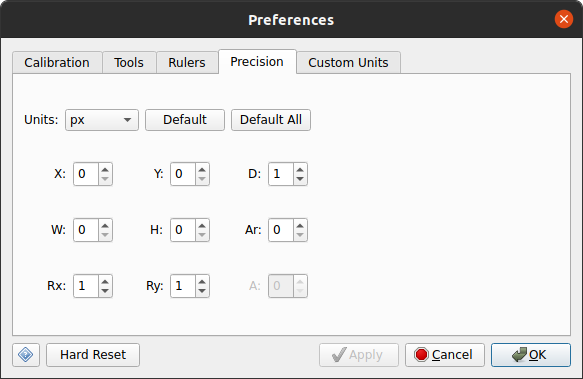
The number of decimal places displayed for measurements can be specified for each set of units. Use the Units drop down menu to select the units whose precisions are to be set. A precision can be specified for each measurement shown on the Tool Information section. The default precisions for the selected units can be restored by pressing the Default button. The default precisions for all units can be restored by pressing the Default All button.
Custom Units Preferences
For details on defining custom units, see the Custom Units section.
Hard Reset
Pressing the Hard Reset button restores Meazure to a freshly installed state. All customizations including calibration, custom units and recorded positions are deleted or reset to their defaults.
Position Logging
Position logging is the recording of tool positions. For example, the Cursor tool or Point tool can be used to digitize positions along a path. The recorded positions can be saved to a file, subsequently reloaded and played back.
Recording Positions
The position of the current measurement tool can be saved either by selecting the Record Position item from the Edit menu, by pressing Ctrl+P, or by using the Add button on the position management dialog. A number of supporting items are recorded along with the current tool and its position. These items include a time stamp, the current screen size and resolution, the location of the coordinate system origin, and the current units. Recorded positions can be managed or saved to a file.
Saving and Loading Positions
When one or more positions have been recorded, they can be saved to a position log file. To save the recorded positions, select either the Save Positions or Save Positions As item from the File menu. In addition, the positions can be saved using the appropriate buttons on the position management dialog.
Positions are saved to an XML file with the extension mpl. The format of the file is described by the Position Log file DTD located at https://www.cthing.com/dtd/PositionLog1.dtd.
A position log file can be loaded in the following ways:
- Selecting the Load Positions item on the File menu
- Using the Ctrl+O keyboard shortcut
- Pressing the Load button on the position management dialog
- Specifying the position log file on the command line when launching meazure from a command prompt
- Double-clicking on a position log file on the desktop
Once a position log file has been loaded, the position management dialog is displayed to allow playback of the positions.
If there are unsaved recorded positions when attempting to exit Meazure, a dialog is displayed offering to save the positions.
Deleting Positions
Recorded positions can be deleted selectively using the position management dialog, or can be completely deleted using either the management dialog or the Delete Positions item on the Edit menu.
Managing Positions
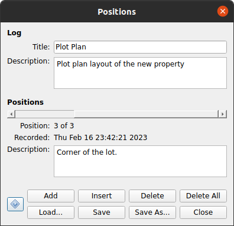 The position management dialog provides a one-stop shop for recording, editing, saving, loading and replaying measurement tool positions. The position management dialog is non-modal meaning it is possible to use the rest of Meazure while the dialog is displayed. The dialog can be accessed from the Manage Positions item on the Edit menu. The dialog is displayed whenever a position log file is loaded.
At the top of the position management dialog is the Log section containing text fields for specifying a title and description for the set of recorded positions.
Below the Log section is the Positions section. This section provides a slider for replaying the recorded positions, information about the currently displayed position, and a text area for providing a description of the position.
At the bottom of the dialog is a set of buttons that provide complete management of tool position logging.
- Add
- Records the current measurement tool position.
- Insert
- Records the current measurement tool position and inserts it before the position currently selected by the playback slider.
- Delete
- Deletes the position currently selected by the playback slider.
- Delete All
- Deletes all recorded positions.
- Load
- Loads a position log file. This replaces the currently recorded positions, if any.
- Save
- Saves the currently recorded positions to a position log file.
- Save As
- Saves the currently recorded positions to a position log file.
- Close
- Dismisses the dialog.
Configuration Files
Meazure saves its configuration between runs. The configuration includes the currently selected measurement tool, all tool positions, the measurement units and calibration, colors and custom units.
The configuration can be exported to a file, and imported at a later time possibly on a different computer. To export the current configuration, select the Export Configuration item on the File menu. Meazure configuration files have the extension mea. A configuration can be loaded the following ways:
- Selecting the Import Configuration item on the File menu
- Specifying the configuration file on the command line when launching meazure from a command prompt
- Double-clicking on a configuration file on the desktop
Importing a configuration replaces the current units calibration and custom units.